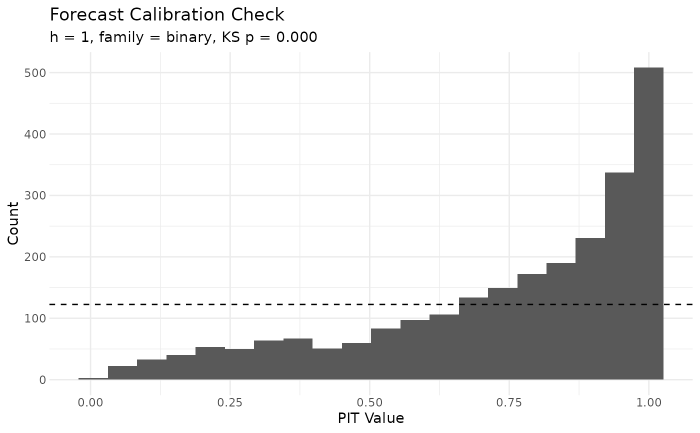

Probability-integral-transform calibration check for h-step forecasts
Source:R/forecast_pit.R
forecast_pit.RdFor a fit with at least one dynamic component, evaluates how well the
h-step posterior-predictive distribution covers the actually
observed outcomes at the corresponding period(s). A well-calibrated
forecast produces approximately Uniform(0, 1) PIT values.
Arguments
- fit
A fitted
lameobject trained on the firstT - hperiods (the function does not refit; the user is responsible for the train/forecast split).- y_future
A list of length
hof held-out observed matrices, one per forecast period. The same shape asfit$YPM[[t]]elements.- h
The forecast horizon (length of
y_future). Inferred fromlength(y_future)when not supplied.- n_draws
Number of posterior draws to use for the forecast. Default uses all stored draws.
Value
A list of class forecast_pit with components
pit (numeric vector), ks_stat (KS statistic against
Uniform), ks_p (KS p-value), cover_95 (fraction of
PIT values in [0.025, 0.975]).
Details
Workflow: fit on periods 1:(T - h), forecast h steps
ahead, score against the held-out T - h + 1 : T observations.
Returns a numeric vector of PIT values (one per observed dyad in the
held-out periods), plus a one-row summary with the Kolmogorov-Smirnov
statistic against Uniform(0, 1) and a fraction-of-observed-dyads
coverage diagnostic.
Families. For family = "normal" / "tobit", the
PIT is computed analytically from the per-draw forecast variance. For
discrete families ("binary", "poisson", "ordinal")
the randomised PIT of Czado, Gneiting & Held (2009) is used. For rank
families ("cbin", "frn", "rrl") PIT is not
implemented; the function returns NULL with an informational note.
Plotting. The companion plot() method on the returned
object renders a histogram with a uniform reference line. Use
ggplot2::ggplot(pit$pit) + geom_histogram() for custom plots.
References
Czado, C., Gneiting, T., & Held, L. (2009). Predictive model assessment for count data. Biometrics, 65(4), 1254-1261.
Examples
# \donttest{
data(YX_bin_list)
Y_train <- YX_bin_list$Y[1:3]
Y_test <- YX_bin_list$Y[4]
X_train <- YX_bin_list$X[1:3]
fit <- lame(Y_train, Xdyad = X_train,
family = "binary", R = 0,
dynamic_beta = "dyad",
nscan = 200, burn = 50, odens = 5, verbose = FALSE)
#> Warning: `family` = "binary" but `Y` contains values other than 0/1.
#> ℹ `Y` will be thresholded to `1 * (Y > 0)`; if you meant counts, use "poisson",
#> or "ordinal"/"normal" as appropriate.
pit <- forecast_pit(fit, y_future = Y_test)
#> Warning: ! Posterior 95% interval for `rho_beta` reaches 0.994.
#> ℹ Under AR(1) the `h`-step forecast variance saturates at the stationary level
#> `sigma_beta^2 / (1 - rho_beta^2)`, which itself explodes as `rho_beta -> 1`;
#> horizons beyond "3" become uninformative in this regime.
#> ℹ Consider refitting with `dynamic_beta_kind = "rw1"` if the underlying process
#> is genuinely unit-root.
pit$ks_p
#> [1] 1.285517e-287
plot(pit)

# }